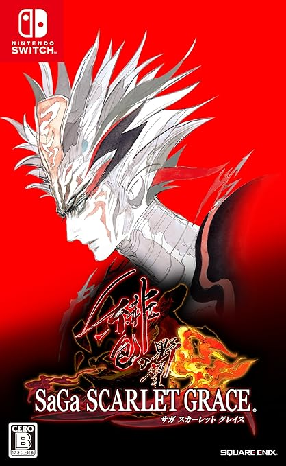

サガスカ十二星神
はじめに
サガスカは星神、精霊、冥魔と人間を廻る物語なのですが、歴代サガの例にもれず、ゲーム内ではこれらについてあまり説明がなされていません（されていても断片的なので繋ぎ合わせるのが難しいです）。これらの関係性を整理することで、サガスカをより楽しむことができる思っています。
2021年7月16日、ロマサガRSでサガスカ関連の新キャラが実装されました。その中でもヴァッハ神が一番人気が高いのかなと感じました。ヴァッハ神はサガスカの世界では「十二星神」の一柱なので、十二星神についてまとめてみました。この記事で一人でも多くの人がサガスカに興味を持ってくれればいいなと思っています。
サガスカのネタバレを含んでいるため、ネタバレを見たくない方はブラウザを閉じるか戻るボタンで戻り、この先には進まないようにしてください。
星神・精霊・冥魔
これはサガ スカーレット グレイス 緋色の野望の発売前の河津さんのツイートです。星神・精霊・冥魔について語られています。星神は名前の通り神様で、精霊は世界の力の源、冥魔は悪しき存在であることが何となくわかります。
#サガスカ #サガスカーレットグレイス #緋色の野望 #どんなゲーム
— 河津秋敏 (@SaGa30kawazu) June 22, 2018
その19. 星神・精霊・冥魔
この世界では神々は星界にいると信じられています。星神と呼ばれます。また世界の様々な力は五つの精霊に由来すると理解されています。悪い事が起きるのは様々な冥魔の仕業です。 pic.twitter.com/e4ziwY56pw
ロマサガRSで出てきた玄蟲や不死鳥は精霊、サウノックは冥魔です（以下はサガスカ 緋色の野望でディレクターを務めた生田さんのツイート）。
玄蟲
— 生田泰浩（ゲーム開発者） (@y_ikuta) July 18, 2021
水の精霊。河津さんが大王具足虫というワードを出すくらい美しくない系の設定。
当初バトル企画は「腐臭レベル」というパラメータを作ろうとしてました。
サーシャ的な美人が腐臭というのは、FF8キスティス的な発想だったのですが、コストの都合でやめました。
サーシャのイメージは守られた（？ pic.twitter.com/l2BD0TSBhe
不死鳥
— 生田泰浩（ゲーム開発者） (@y_ikuta) July 18, 2021
火の精霊。
最初戦う時は死にかけ、最後戦う時は孵化時、その後飛び去る、と設定をもらってどう作るか悩んだボス
コスト的に姿は1種しか作れないので、死にかけは黒ずんでる、最後は燃え盛るという、テクスチャ変化で乗り切ることに
連撃を飛び去る条件にとのオーダーも別であってそれも大変 pic.twitter.com/rQ87uxV7nT
サウノック
— 生田泰浩（ゲーム開発者） (@y_ikuta) July 18, 2021
大地の蛇のヌシ
知らない人向けに説明すると、冥魔サウノックが土の精霊の大地の蛇のヌシからデバイス使ってパワーを得ていたわけです
ウルピナ編でサウノック倒してホッとしたあと、デバイスに操られたヌシが出てきて苦労した方すみませんね
サガスカではヌシは通常倒せないHPにしてます pic.twitter.com/zGs5L8BI1i
もう少し詳細を知るには、サガスカの設定資料集「緋の天啓」に記載されている神話を読むのがいいと思います。以下に超概略を記載していきます。
神話（超概略）
創生の神話
サガスカの世界は「十二星神」と呼ばれる神々によって創造されました。
星神は地上に人間を住まわせたが、弱く惨めな人間を哀れに思い、火を伝える神「ファイアブリンガー」を地上へと遣わし、生活を豊かにする術を教えました。
人間は火で生活を豊かにすることを学びましたが、その一方で、火を争いに使うことも出来ると知りました。争いを知った人間に冥魔が欲望を吹き込むことで、人間は欲のために激しく争うようになりました。
星神に剣を振るう人間まで現れました。星神はひとりの人間に大いなる力を授け、地上の争いを納め、冥魔と配下の魔物を打ち払うように命じました。
長く続く星神と冥魔、人間と魔物との戦いを終わらせるべく、ファイアブリンガーは「精霊」に働きかけ、仲間に引き入れました。これにより、星神と人間は冥魔を地下へと追い払うことに成功しました。
戦いが終わると、勝利をもたらしたファイアブリンガーは裁きの場へと引き出されました。実はファイアブリンガーは冥魔たちに情報を流しており、それが原因で戦いが長引いていたのです。
裏切りの神ファイアブリンガーは追放刑となり、「七千年に一度の帰還」を許されたが、狡賢なるファイアブリンガーは「千年に七度の帰還」と書き換えました。
こうして、星神とファイアブリンガーとの闘いが始まりました。
帝国の興り
星神から力を授けられ、人間の軍勢を率いて冥魔との戦いに勝利をもたらした男は「英雄」と呼ばれ、世界の中心に「帝都アスワカン」という都を築き、国を興しました。これが帝国の始まりです。
帝国は、世界を「州」という行政単位に分けました。
図：サガスカの世界地図
やがて英雄は死に、その血を受け継ぐ代々の皇帝が偉業を受け継ぎました。
この変化の中、帝国に反する部族も現れたり、時には争いが起こりましたがその最中、ファイアブリンガーが一度目の帰還を果たし、それに呼応するかのように冥魔と魔物が地上にはいだします。
厳しい戦いの中、星神と人間は勝利を収め、ファイアブリンガーは天の彼方へと去っていきました。
その後、七度ファイアブリンガーは帰還を果たしますが、そのたびに敗れ、天へと帰ります。
特に最後の七度目の戦いは熾烈で、世界は滅亡するかもしれないという声も聞こえましたが、その流れを押し留めたのは、やはり英雄の末裔である「皇帝」でした。
最終皇帝ワクヌス・アスワカナル・フィノネス・ミトレイオスはその手でファイアブリンガーを打倒しました。
緋色の彗星は砕け散り、無数のかけらが流星となって地上に降り注ぎました。その美しき光は、星神と人間の勝利を祝う、光の祝祭のようでした。
新しい時代へ
ファイアブリンガーが消滅し、帝国は存在意義を失った。最終決戦から１カ月後、西部辺境で最初の暴動が発生し、各地に飛び火した。
暴動は大規模になり、それによる混乱は帝国の中心部にも波及した。
ファイアブリンガーが消滅した日からちょうど１年。勝利の記念日に、皇帝ミトレイオスが皇子のひとりに暗殺された。
残った皇帝の子たちはそれぞれが皇帝を僣称し、帝国は分裂。争いの中で皇子・皇女は戦死あるいは暗殺され、皇帝直系の血筋は絶たれた。
こうして帝国の統治はあっけなく終わり、各州の領主は自立の道を歩むこととなる。
帝国の滅亡から70年。
かつての帝国統治を知らない世代が成長し、分裂した世界が当たり前になった。だが、ファイアブリンガーが消滅しても、冥魔の活動が終わったわけではない。
魔物が目撃されたという噂が増え、それは確かな事実のようであった。
だが時代は主人公を用意する。新しい時代の新しい主人公を。
・・・ここまでが、サガスカの世界の中で語り継がれている神話です。星神・精霊・冥魔と人間の関係性が何となく見えたと思います。プレイヤーが旅する舞台は、帝国が滅亡してから70年が経過した世界です。
裏の設定として【語られなかった神話―真意―】というものがあります。それについてはここでは語りません。たぶん緋の天啓にしか書かれていないことなので気になる方は購入してみて下さい。

帝都アスワカン
神話の通り、帝国の都です。政治・軍事・経済・文化あらゆるものの中心地でした。数度の略奪や大火にあい、今は荒廃しています。
各星神の神殿があります。
ヤクサルト辺境州
ヤクサルト辺境州は、十二星神の巡礼地の存在で名高い地です。かつては、アスワカンの神殿へ行けない者の代用の巡礼地だったが、いまではこちらの巡礼の方が盛んになっています。
この州では、イベントをこなしながら各星神に祈りを捧げることができます。ある星神と戦うことができる場でもあります。
十二星神と恩寵
十二星神は、それぞれが司っている分野があります。サガスカではバトル中、条件を満たすと確率で「恩寵」という形で各星神から恩恵を受け、窮地に陥ったパーティを援護してもらえることがあります。
十二星神の恩寵のエフェクト集
十二星神と恩寵
以下が、十二星神を構成するメンバーとその恩寵です。
※名前の列のリンクを押下すると詳細に飛びます
| 名前 | 分野 | 恩寵 | 恩寵の内容 |
|---|---|---|---|
| ヴァッハ神 | 魔術 | ヴァッハの眩耀（げんよう） | 味方全体のHPを大幅に回復し、各種ステータスアップの効果を与える。 あらゆる恩寵と同じ条件で発生する可能性がある。 |
| マリガン神 | 武術 | マリガンの狂騒 | 敵全体に強大なダメージを与える。 敵の残HPが味方より高く、劣勢の時ほど発生しやすい。 |
| シャムス神 | 法律 | シャムスの裁定 | 敵全体にダメージを与え、高確率でスタンさせる。 戦闘の終盤、敵が大技を構える時に発生しやすい。 |
| ディーマージュ神 | 航海 | ディーマージュの嘆き | 敵全体に大きなダメージを与え、確率で混乱させる。 敵の連撃が発生した後に発生しやすい。 |
| テヘドラ神 | 工芸 | テヘドラの抱擁 | 味方全体のHPを回復し、ステータスダウンを解除する。 戦闘の中盤以降、ステータスダウン効果を受けた後に発生しやすい。 |
| アシュテール神 | 農業 | アシュテールの慈愛 | 味方全体のHPを大きく回復し、状態異常を解除する。 戦闘の中盤以降、状態異常を受けた後に発生しやすい。 |
| カダ神 | 医薬 | カダの癒し | 味方全体のHPを大幅に回復する。 敵に余力があり、大ダメージを受けた都に発生しやすい。 |
| アダマス神 | 鍛冶 | アダマスの支援 | 味方全体に攻撃力アップの効果を与える。 敵防御力が高く、ダメージが通りにくい時に発生しやすい。 |
| イムホキエル神 | 建築 | イムホキエルの加護 | 味方全体に防御力アップの効果を与える。 敵攻撃力が高く、ダメージを受けやすい時に発生しやすい。 |
| トゥクツ神 | 遊牧 | トゥクツの追風 | 味方全体に素早さアップの効果を与え、行動順を早める。 戦闘の中盤以降、味方より素早い敵が多い時に発生しやすい。 |
| バートレット神 | 交易 | バートレットの計略 | 敵全体に防御力・素早さダウンの効果を与え、確率で眠らせる。 戦闘の中盤以降、敵が多く残存している時に発生しやすい。 |
| ウズメ神 | 芸術 | ウズメの激励 | 味方のBPの最大値と現在値を上昇させる。 敵に余力があり、味方の行動が実行できなくなった後に発生しやすい。 |
おまけページへのリンク
参考にした記事
- ピクシブ百科事典 十二星神
- サガ スカーレットグレイス（SaGa SCARLET GRACE） 攻略サイト 恩寵
- サガスカーレットグレイス 恩寵(おんちょう)と効果 一覧表
- サガスカーレットグレイス 恩寵の習得方法
Switch版サガスカ

PS4版サガスカ

緋の天啓
サントラ